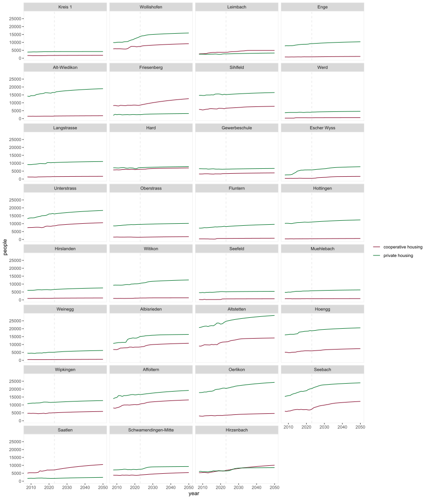
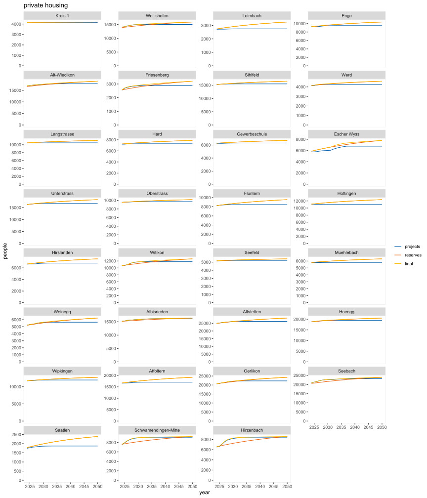
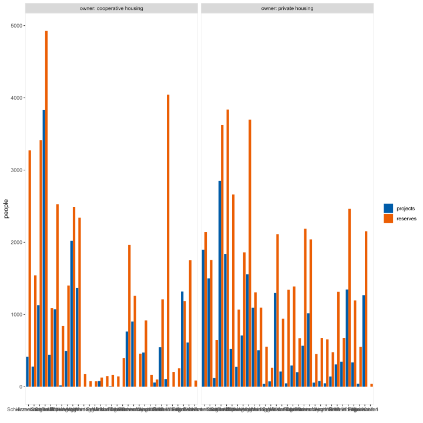
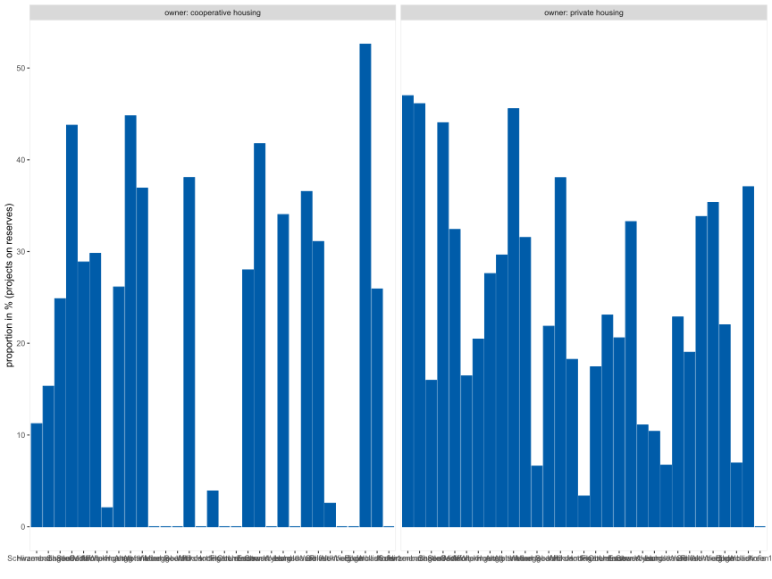
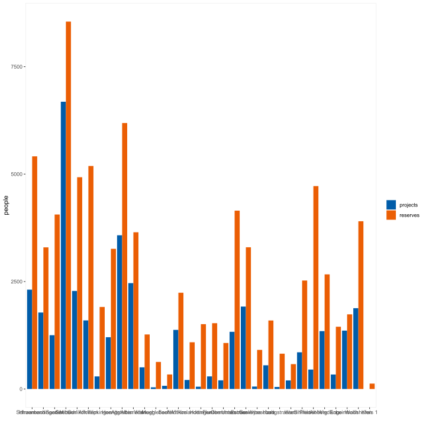
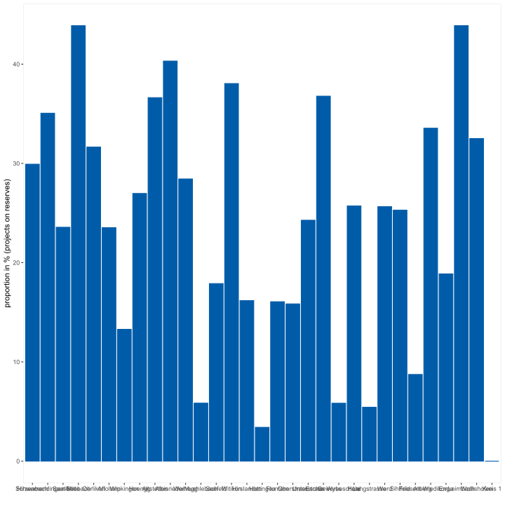

12 Housing model
12.1 combine: capacity/reserves and ownership prediction
12.1.1 proportion of cooperative housing according to capacity/reserves
capacity/reserves contains only people due to additional (!) yearly (!) usage of reserves therefore, add the cumulative values to the past population
with past (for plot) why? for plotting why a plot? to check if capacity/reserves population values are… …meaningful in comparison to the past
12.1.2 proportion cooperative housing (according to capacity/reserves vs. district trends)
12.2 projects, capcity and reserves
12.2.1 with the past

12.2.2 by district (without owner)
12.2.3 all (entire city)
12.3 compare projects and reserves
12.3.1 projects and reserves (cumulative amount of people)

12.3.2 total people per district and ownership
WHY not with the object car_spa? it is easier to calculate totals with the original objects and closer to ‘raw’ data, i.e. ownership trends not considered

12.3.3 total proportion by district and ownership

12.3.4 total people by district

12.3.5 total proportion by district
